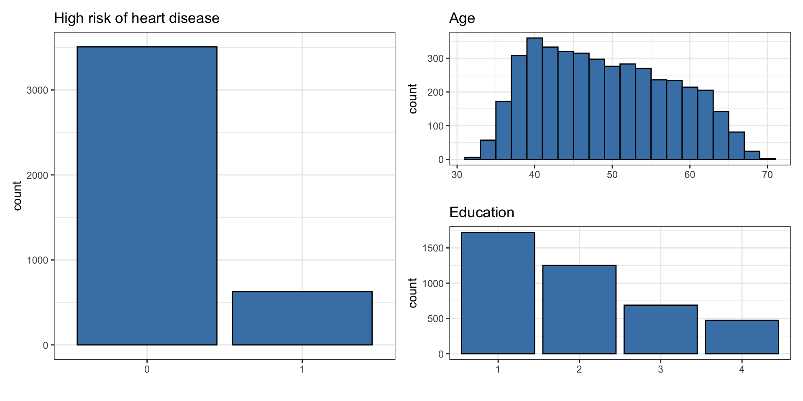
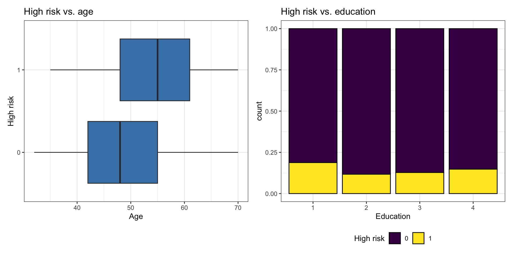
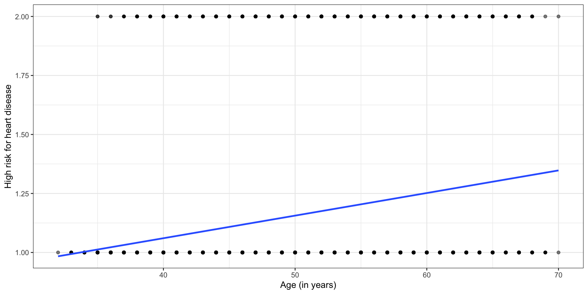
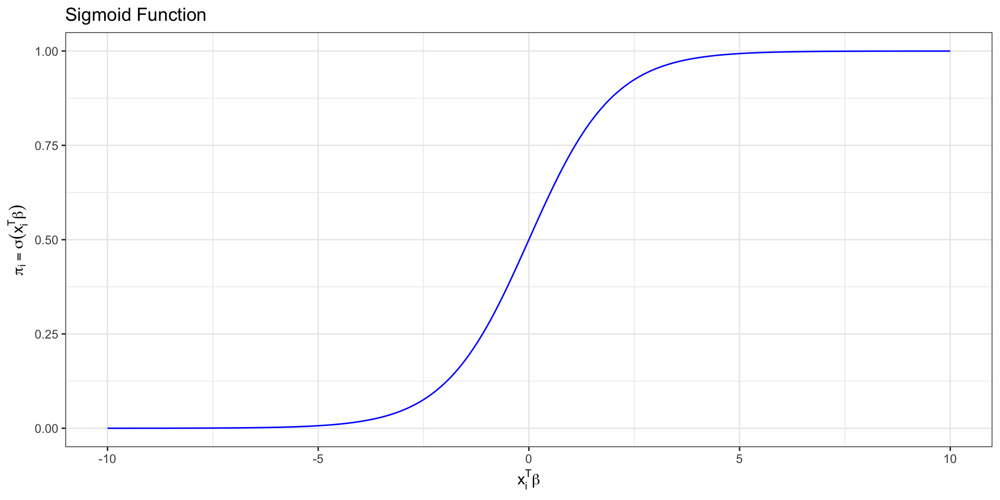

# load packages
library(tidyverse)
library(tidymodels)
library(knitr)
library(Stat2Data) #contains data set
library(patchwork)
# set default theme in ggplot2
ggplot2::theme_set(ggplot2::theme_bw())Logistic regression
Announcements
Lab 06 due TODAY at 11:59pm
Project presentations in lab on Friday, March 27
Statistics experience due April 2
SSMU Data Mini #3 - April 4 (after statistics experience deadline)
- See Ed Discussion for full announcement
Topics
Introduce logistic regression for binary response variable
Use maximum likelihood estimation to derive \(\hat{\boldsymbol{\beta}}\)
Interpret coefficients of logistic regression model
Computational setup
Risk of coronary heart disease
This data set is from an ongoing cardiovascular study on residents of the town of Framingham, Massachusetts. We want to examine the relationship between various health characteristics and the risk of having heart disease.
high_risk: 1 = High risk of having heart disease in next 10 years, 0 = Not high risk of having heart disease in next 10 yearsage: Age at exam time (in years)education: 1 = Some High School, 2 = High School or GED, 3 = Some College or Vocational School, 4 = College
Data: heart_disease
# A tibble: 4,135 × 3
age education high_risk
<dbl> <fct> <fct>
1 39 4 0
2 46 2 0
3 48 1 0
4 61 3 1
5 46 3 0
6 43 2 0
7 63 1 1
8 45 2 0
9 52 1 0
10 43 1 0
# ℹ 4,125 more rowsUnivariate EDA

Bivariate EDA
Code
p1 <- ggplot(heart_disease, aes(x = high_risk, y = age)) +
geom_boxplot(fill = "steelblue") +
labs(x = "High risk",
y = "Age",
title = "High risk vs. age") +
coord_flip()
p2 <- ggplot(heart_disease, aes(x = education, fill = high_risk)) +
geom_bar(position = "fill", color = "black") +
labs(x = "Education",
fill = "High risk",
title = "High risk vs. education") +
scale_fill_viridis_d() +
theme(legend.position = "bottom")
p1 + p2
Linear model?
Let’s consider the linear model \(\hat{\mathbf{y}} = \mathbf{X}\hat{\boldsymbol{\beta}}\)

Does the linear model make sense?
Binary response variable
The response variable \(Y\) is a binary random variable such that the probability that \(Y_i = 1\) is \(\pi\).
\[ \begin{aligned} &P(Y_i= 1) = \pi\\[8pt] &P(Y_i = 0) = 1 - \pi \end{aligned} \]
. . .
Recall in linear regression, we modeled the expected value of \(Y_i\) given the predictors \(E(\mathbf{y}|\mathbf{X}) = \mathbf{X}\boldsymbol{\beta}\)
. . .
Now we have a response variable, such that \(E(Y_i | \pi) = \pi\)
Let’s try a new model
Let’s say \(\pi = 0.5\). What does \(E(Y_i | \pi) = \pi\) mean in the context of the data? Is this assumption realistic in practice?
Let’s try a new model
We want to compute probabilities \(\pi\) based on the predictor variables (e.g., use an individual’s age and education to evaluate their risk for heart disease).
Suppose we try a model of the form
\[ \pi_i = \mathbf{x}_i^\mathsf{T}\boldsymbol{\beta} \]
where \(x_i^\mathsf{T}\) is the \(i^{th}\) row of the design matrix \(\mathbf{X}\)
What is wrong with using a model of this form?
Logit link function
Instead of modeling \(\pi_i\) directly, we will model \(\text{logit}(\pi_i) = \text{log}\big(\frac{\pi_i}{1 - \pi_i}\big)\) such that
\[ \text{logit}(\pi_i) = \text{log}\Big(\frac{\pi_i}{1 - \pi_i}\Big) = \mathbf{x}_i^\mathsf{T}\boldsymbol{\beta} \]
. . .
The logit function links \(E(Y_i | \pi)\) to the predictors, so the logit is a link function.
Logit function
The logit function is
\[ \text{logit}(\pi_i) = \text{log}\Big(\frac{\pi_i}{1 - \pi_i}\Big) \]
What happens to \(\text{logit}(\pi_i)\) as \(\pi_i \rightarrow 0\)?
What happens as \(\pi_i \rightarrow 1\)?
From logit to probability
Logistic model \[\text{logit}(\pi_i) = \log\big(\frac{\pi_i}{1-\pi_i}\big) = \mathbf{x}_i^\mathsf{T}\boldsymbol{\beta}\]
. . .
Odds \[\exp\big\{\log\big(\frac{\pi_i}{1 - \pi_i}\big)\big\} = \frac{\pi_i}{1-\pi_i}\]
. . .
Probability
\[\pi_i = \frac{\exp\{\mathbf{x}_i^\mathsf{T}\boldsymbol{\beta}\}}{1 + \exp\{\mathbf{x}_i^\mathsf{T}\boldsymbol{\beta}\}} = \frac{1}{\exp\{-\mathbf{x}_i^\mathsf{T}\boldsymbol{\beta}\} + 1}\]
Sigmoid function
We call this function relating the probability to the predictors a sigmoid function \[ \sigma(z) = \frac{\exp\{z\}}{1 + \exp\{z\}}= \frac{1}{1+\text{exp}\{-z\}}.\]
This is the “S” curve produced by logistic regression.
Sigmoid function

Logistic regression
We want to use our data to find \(\hat{\boldsymbol{\beta}}\), so that we can predict the probability that \(Y_i = 1\) given the predictors
\[ \hat\pi_i = \frac{\exp\{\mathbf{x}_i^\mathsf{T}\hat{\boldsymbol\beta}\}}{ 1 + \exp\{\mathbf{x}_i^\mathsf{T}\hat{\boldsymbol\beta}\}} \]
. . .
We derive \(\hat{\boldsymbol{\beta}}\) using maximum likelihood estimation
Likelihood
For an individual observation:
\[p(y_i | \mathbf{X}, \boldsymbol{\beta}) = \pi^{y_i}_i (1-\pi_i)^{1-y_i}\]
. . .
The likelihood is the joint density of \(y_1, \ldots, y_n\) as a function of the unknown \(\boldsymbol{\beta}\)
. . .
\[\begin{aligned}L(\boldsymbol{\beta} | \mathbf{X}, \mathbf{y}) &= p(y_1, \dots, y_n | \mathbf{X}, \boldsymbol{\beta}) \\[8pt] & = \prod_{i=1}^n p(y_i | \mathbf{X}, \boldsymbol{\beta}) \\[8pt] & = \prod_{i=1}^n \pi_i^{y_i} (1-\pi_i)^{1-y_i}\end{aligned}\]
Log-likelihood
We use the log-likelihood to find the MLE for \(\boldsymbol{\beta}\)
The log-likelihood function for \(\boldsymbol\beta\) is
\[ \begin{aligned} \log L(\boldsymbol{\beta} \mid \mathbf{X}, \mathbf{y}) &= \sum_{i=1}^n \log\left(\pi_i^{y_i}(1-\pi_i)^{1-y_i}\right) \\[8pt] &= \sum_{i=1}^n y_i \log(\pi_i) + (1-y_i)\log(1-\pi_i) \end{aligned} \]
Log-likelihood
Plugging in \(\pi_i = \frac{\exp\{\mathbf{x}_i^\mathsf{T} \boldsymbol\beta\}}{1+\exp\{\mathbf{x}_i^\mathsf{T} \boldsymbol\beta\}}\), we get
\[
\begin{aligned}
\log L(\boldsymbol{\beta} \mid \mathbf{X}, \mathbf{y}) = \sum_{i=1}^n &y_i \log\left(\frac{\exp\{\mathbf{x}_i^\mathsf{T}\boldsymbol{\beta}\}}{1 + \exp\{\mathbf{x}_i^\mathsf{T}\boldsymbol{\beta}\}}\right) \\
&+ (1 - y_i)\log\left(\frac{1}{1 + \exp\{\mathbf{x}_i^\mathsf{T}\boldsymbol{\beta}\}}\right) \end{aligned} \]
\[= \sum_{i=1}^n y_i \mathbf{x}_i^\mathsf{T} \boldsymbol\beta - \sum_{i=1}^n \log(1+ \exp\{\mathbf{x}_i^\mathsf{T} \boldsymbol{\beta}\})\]
Finding the MLE
- Taking the derivative:
\[ \begin{aligned} \frac{\partial \log L}{\partial \boldsymbol\beta} =\sum_{i=1}^n y_i \mathbf{x}_i^\mathsf{T} &- \sum_{i=1}^n \frac{\exp\{\mathbf{x}_i^\mathsf{T} \boldsymbol\beta\} \mathbf{x}_i^\mathsf{T}}{1+\exp\{\mathbf{x}_i^\mathsf{T} \boldsymbol\beta\}} \end{aligned} \]
. . .
- If we set this to zero, there is no closed form solution.
. . .
- R uses numerical approximation to find the MLE.
Logistic regression in R
heart_disease_fit <- glm(high_risk ~ age + education,
data = heart_disease,
family = "binomial",
control = glm.control(trace = TRUE)) # just to show estimation Deviance = 3336.175 Iterations - 1
Deviance = 3300.661 Iterations - 2
Deviance = 3300.136 Iterations - 3
Deviance = 3300.135 Iterations - 4
Deviance = 3300.135 Iterations - 5#stop printing for future models
untrace(glm.fit)Logistic regression in R
| term | estimate | std.error | statistic | p.value |
|---|---|---|---|---|
| (Intercept) | -5.385 | 0.308 | -17.507 | 0.000 |
| age | 0.073 | 0.005 | 13.385 | 0.000 |
| education2 | -0.242 | 0.112 | -2.162 | 0.031 |
| education3 | -0.235 | 0.134 | -1.761 | 0.078 |
| education4 | -0.020 | 0.148 | -0.136 | 0.892 |
\[ \begin{aligned} \log\Big(\frac{\hat{\pi}_i}{1-\hat{\pi}_i}\Big) =& -5.385 + 0.073 \times \text{age}_i - 0.242\times \text{education2}_i \\ &- 0.235\times\text{education3}_i - 0.020 \times\text{education4}_i \end{aligned} \] where \(\hat{\pi}_i\) is the predicted probability an individual is high risk of having heart disease in the next 10 years
Interpretation in terms of log-odds
| term | estimate | std.error | statistic | p.value |
|---|---|---|---|---|
| (Intercept) | -5.385 | 0.308 | -17.507 | 0.000 |
| age | 0.073 | 0.005 | 13.385 | 0.000 |
| education2 | -0.242 | 0.112 | -2.162 | 0.031 |
| education3 | -0.235 | 0.134 | -1.761 | 0.078 |
| education4 | -0.020 | 0.148 | -0.136 | 0.892 |
education4: The predicted log-odds of being high risk for heart disease are 0.020 less for those with a college degree compared to those with some high school, holding age constant.
. . .
WarningInterpretation in practice
We generally do not use the log-odds interpretation in practice.
Interpretation in terms of log-odds
| term | estimate | std.error | statistic | p.value |
|---|---|---|---|---|
| (Intercept) | -5.385 | 0.308 | -17.507 | 0.000 |
| age | 0.073 | 0.005 | 13.385 | 0.000 |
| education2 | -0.242 | 0.112 | -2.162 | 0.031 |
| education3 | -0.235 | 0.134 | -1.761 | 0.078 |
| education4 | -0.020 | 0.148 | -0.136 | 0.892 |
age: For each additional year in age, the predicted log-odds of being high risk for heart disease increase by 0.073, holding education level constant.
. . .
WarningInterpretation in practice
We generally do not use the log-odds interpretation in practice.
Interpretation in terms of odds
| term | estimate | std.error | statistic | p.value |
|---|---|---|---|---|
| (Intercept) | -5.385 | 0.308 | -17.507 | 0.000 |
| age | 0.073 | 0.005 | 13.385 | 0.000 |
| education2 | -0.242 | 0.112 | -2.162 | 0.031 |
| education3 | -0.235 | 0.134 | -1.761 | 0.078 |
| education4 | -0.020 | 0.148 | -0.136 | 0.892 |
Interpret the following in terms of the odds:
education4age
Interpretation in terms of odds
\(\exp\{\hat{\beta}_j\}\) is the (adjusted) odds ratio
Level \(k\) versus the baseline for categorical predictors
\(x_{j + 1}\) versus \(x_j\) for quantitative predictors
We can also interpret the odds ratio in terms of a percent difference
“Odds multiplying by \(\exp\{\hat{\beta}_j\}\)” is equivalent to “the odds changing by \((\exp\{\hat{\beta}_j\} - 1) \times 100\) %”
Recap
Introduced logistic regression for binary response variable
Used maximum likelihood estimation to derive \(\hat{\boldsymbol{\beta}}\)
Interpreted coefficients of logistic regression model
Next class
Logistic regression: prediction and classification
Complete Lecture 19 prepare